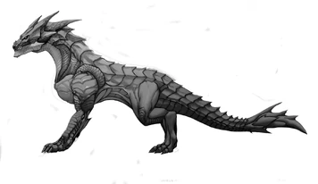

La premiére chose que vous devez savoir a propos des Dragons, c'est que il ne sont pas touts des Dragon! Dépendant de leur nombre de membre, leur espéce peuvent complétement changer. Et avec ce changement, peut mettre en place une planitude de différent moyen de les éradiquer!

Il est important de savoir exactement quelle sorte de dragon vous saffronter, car leur espéces spécifique peuvent differencier leur intélingemce, force et pouvoir magic. Vous vourriez les details dans chaquune des pages spécifique mes engéralle, le plus qu'un dragon a de memebre, le plus puissant il est!